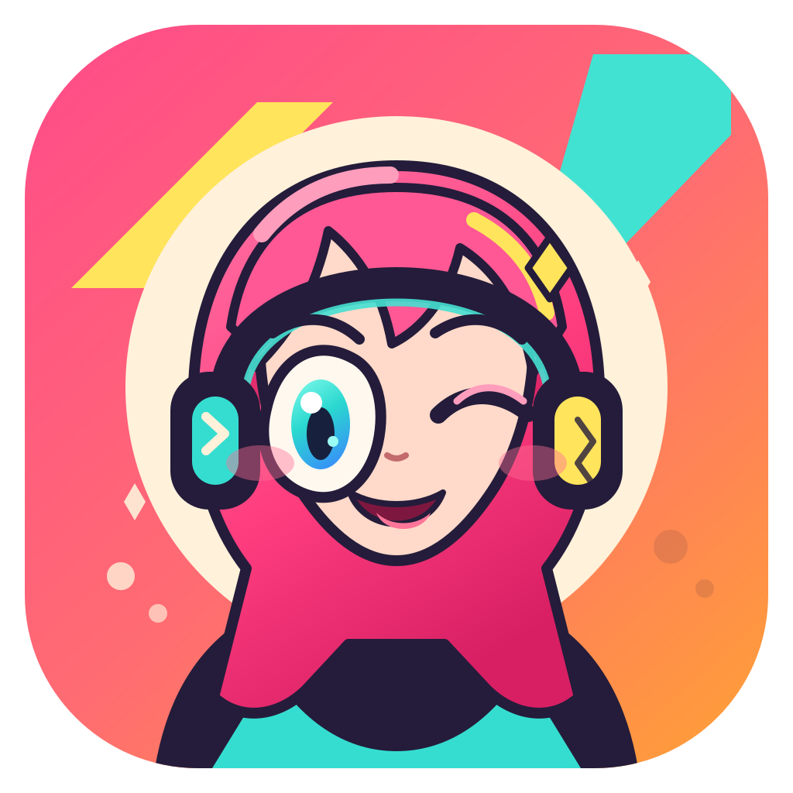

ASUKA / original anime agent / v2
Younger.
Faster.
Online.
A bright original character signal for an AI coding agent: coral hair, mint eyes, an energetic wink, and a terminal prompt built into the headset.

Scale check
 256 px
256 px 128 px
128 px 64 px
64 pxCoral hair
A recognizable silhouette that survives the smallest icon sizes.
Mint signal
Eyes and ear cups carry the bright agent energy.
Prompt core
The ear-cup chevron keeps the coding-agent cue.